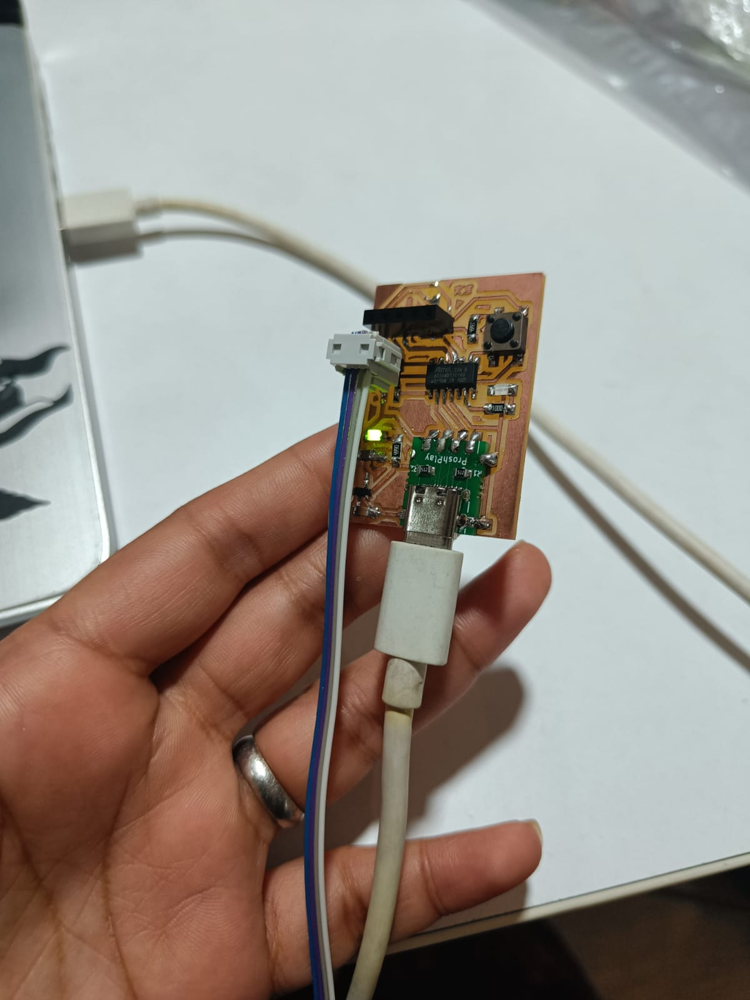

Week - 8: Electronics Production
Week 8 of the Electronics Production course includes:
Group Assignment:
- Use the test equipment in your lab to observe the operation of a microcontroller circuit board.
- Send a PCB out to a board house.
Individual Assignment:
- Use an EDA tool to design a development board that can interact and communicate with an embedded microcontroller.
- Produce and test the board.
Extra Credit Opportunities:
- Try another design workflow.
- Design a case for the board.
- Simulate the board's operation.
Multimeter for testing:
Multimeters are versatile instruments used in electrical engineering and electronics to measure various electrical parameters such as voltage, current, and resistance. They can also test continuity, diodes, and sometimes temperature, frequency, and capacitance, depending on the model. Multimeters are essential tools in designing, testing, and troubleshooting circuits, including those on printed circuit boards (PCBs).
Types of Multimeters
- Analog Multimeters: Use a moving-coil meter and a pointer to display readings on a scale. They're less common now but useful for observing changes or trends over time.
- Digital Multimeters (DMMs): Provide numerical displays and higher accuracy. They often include additional features like auto-ranging, which automatically selects the appropriate measurement range.
Basic Steps for Using a Multimeter
1. Safety First
Ensure the multimeter and its probes are rated for the voltages and currents you plan to measure. Always start measuring at the highest range to prevent damage to the multimeter if the current or voltage is higher than expected.
2. Selecting the Measurement Type
Choose the type of measurement (e.g., voltage, current, resistance) you need. This often involves turning a dial or selecting a mode on the multimeter.
- Voltage: When measuring voltage, connect the probes across the component or section of the circuit you're interested in. For PCB work, ensure you're measuring the correct points to avoid short circuits.
- Current: To measure current, the circuit must be opened, and the multimeter placed in series with the circuit. This is more intrusive and requires careful planning on a PCB to avoid damage.
- Resistance: To measure resistance, ensure the circuit power is off and discharged. Measure across the component of interest.
3. Choosing the Range
If the multimeter is not auto-ranging, select the range that is just above the expected value. If unsure of the value, start higher and work your way down.
4. Connecting the Probes
- COM (Common) Jack: Almost always connects to the black probe.
- Voltage/Ohm/Current Jack: The red probe connects here. For high current measurements, some multimeters have a separate jack.
5. Taking the Measurement
- Apply the probes to the circuit or component. For PCB testing, use fine-tipped probes for accuracy.
- Read the value on the display. Ensure proper contact and stable readings.
6. Interpreting the Results
Understand the meaning of the measurement in the context of your circuit or device. For example, a very high resistance might indicate an open circuit, while a low one could suggest a short circuit.
7. Powering Down and Storage
After use, turn the multimeter off to preserve battery life and store it safely to avoid damage to the probes or the unit itself.
In the interest of developing a better understanding of the components we have to design and test a microcontroller board, I have briefly describe the function of all the components mentioned in the academy’s page in the schedule for this week along with examples describing where and how to use them.
Ribbon Cable
- Use: Connects multiple signals or power connections between different parts of a device, often used to connect PCBs to each other or to peripherals.
- Example: Connecting a motherboard to a front panel in a computer case.
IDC Connector
- Use: (Insulation-Displacement Connector) Connects ribbon cables to a PCB without stripping insulation, useful for making quick and reliable connections.
- Example: Connecting a flat ribbon cable to a header on a PCB for a display interface.
Button
- Use: Provides user input, acting as a simple switch.
- Example: Reset or power button on a device, requiring a debouncing circuit or software.
Switch
- Use: Changes the electrical path within a circuit manually.
- Example: A power switch to connect or disconnect the device from the power supply.
Resistor (I=V/R)
- Use: Limits current, divides voltage, or sets biasing points in a circuit.
- Values: Chosen based on needed resistance to achieve desired current/voltage.
- Example: Pull-up or pull-down resistors for a microcontroller input pin.
Capacitor (C = Q/V, I = C dV/dt)
- Use: Stores electrical charge, filters noise, and provides power supply smoothing.
- Unpolarized: Can be connected in any orientation. Used for filtering high frequencies or coupling audio signals.
- Polarized: Has positive and negative leads, used for larger values in power supplies.
- Example: Decoupling capacitors near IC power pins to smooth out voltage.
Crystal, Resonator
- Use: Provides precise clock signals for microcontrollers and digital circuits.
- Example: A 16 MHz crystal used to provide the clock signal for a microcontroller.
Inductor (V = L dI/dt)
- Use: Stores energy in a magnetic field, used in filters, oscillators, and power conversion.
- Example: An inductor in a buck converter for stepping down voltage efficiently.
Diode (Current from anode to cathode)
- PN: Standard diode, allows current in one direction.
- Schottky: Low forward voltage drop, used for power rectification.
- Zener: Allows current in reverse direction when voltage exceeds a certain value, used for voltage regulation.
- LED: Emits light when forward biased.
- Example: A Schottky diode in a power supply to prevent reverse current.
Transistor
- Bipolar: Controls large currents with a small base current.
- MOSFET: Controls current flow between source and drain with gate voltage.
- Example: A MOSFET used as a switch to control high-power LEDs.
Battery, Regulator, DC-DC Converter
- Use: Provide, regulate, and convert power within a circuit.
- Example: A battery provides power, a regulator ensures stable voltage, and a DC-DC converter adjusts voltage levels efficiently.
Op-amp (Differential gain, negative feedback)
- Use: Amplifies signals, used in filters, oscillators, and signal conditioning.
- Example: An op-amp configured as a non-inverting amplifier to increase sensor signal strength.
Microcontroller
- Use: Acts as the brain of many electronic devices, programmable to perform specific tasks.
- Example: A microcontroller reading sensor data, processing it, and controlling actuators.
Sensors
- Use: Detect environmental changes or user input.
- Example: Temperature sensor in a smart thermostat.
Actuators
- Use: Convert electrical signals into physical action.
- Example: A motor controlled by a PCB to adjust the position of a device.
About Electronic Design Automation:
Electronic Design Automation (EDA) tools are crucial in modern PCB design, streamlining and automating various stages of the design process. EDA software enables designers to create complex circuits efficiently, simulate their behavior under different conditions, and prepare designs for manufacturing. Here's an overview of key concepts and stages in PCB design using EDA tools:
Sketch and Schematic Entry
- Sketch: The initial conceptual phase where the basic functionality and design requirements are outlined.
- Schematic Entry: Using EDA software to create a detailed schematic diagram. This is a symbolic representation of the circuit, showing how components are connected without focusing on their physical placement.
Component Placement
After the schematic is complete, the design moves to the PCB layout phase, where components are placed on a virtual board. EDA tools help in optimizing the placement to minimize noise, reduce signal path lengths, and ensure adherence to thermal management and mechanical constraints.
(Auto)Routing
- Routing: Involves connecting the pins of the placed components according to the schematic connections using copper traces. EDA tools can automate this process (autorouting) or allow manual routing for critical signals.
- Simulation: Before finalizing the design, simulation tools within the EDA software can predict how the circuit will perform, helping identify and correct issues early in the design process.
Fabrication
Once the design and simulations are satisfactory, the EDA tool can generate files (such as Gerber files) required by PCB manufacturers to fabricate the physical board.
Layers
Modern PCBs are often multi-layered, containing several layers of copper for signals, power, and ground. These are essential for managing space, signal integrity, and power distribution in complex designs.
Angles, Vias, Power Planes, and Ground Pours
- Angles: The paths of traces are usually routed at specific angles (often 45°) to minimize electromagnetic interference and improve manufacturability.
- Vias: Conductive pathways that connect traces between different layers of a PCB.
- Power Planes and Ground Pours: Dedicated layers or areas for power distribution and grounding, crucial for reducing noise and improving the electrical performance of the circuit.
Design Rules, DRC (Design Rule Check), and ERC (Electrical Rule Check)
- Design Rules: Guidelines set by PCB manufacturers or standards, including minimum trace widths, spacing, and via sizes. These ensure the PCB can be manufactured reliably.
- DRC: An automated check performed by the EDA software to identify violations of the design rules, such as traces that are too close together.
- ERC: Verifies the electrical correctness of the circuit, such as ensuring there are no short circuits or mismatched impedances.
Design Rules
Design rules are specific guidelines set to ensure that a PCB design can be manufactured reliably and will function as intended. These rules cover a broad spectrum of design aspects, including but not limited to:
- Trace Width and Spacing: Minimum width of the conductive tracks and the minimum distance between them to prevent short circuits and ensure adequate current carrying capacity.
- Via Sizes and Annular Rings: Specifications for the drill sizes of vias (holes that connect different layers) and the copper ring around them, ensuring reliable layer-to-layer connections.
- Component Placement: Guidelines for the minimum distance between components to allow for soldering and heat dissipation, and to avoid physical overlap.
- Solder Mask and Paste Clearances: Clearance sizes for solder masks (protective layer over the copper traces) and solder paste (used for surface mount assembly) applications.
- Power and Ground Planes: Specifications for the design of power and ground layers, including thickness and separation, to ensure adequate power distribution and grounding.
DRC (Design Rule Check)
DRC is an automated process used within Electronic Design Automation (EDA) tools to verify that the PCB design adheres to the predefined design rules. It checks for physical and manufacturing constraints, including:
- Trace Widths and Spacing Violations: Ensures that all traces meet the minimum width and spacing requirements.
- Via and Pad Standards: Verifies that via sizes and annular rings are within acceptable limits.
- Overlap Errors: Checks for components or traces that improperly overlap or violate placement guidelines.
- Solder Mask Expansions: Confirms that solder mask expansions are correct to prevent solder bridging during assembly.
DRC helps identify errors that could lead to manufacturing defects or functional issues, allowing designers to correct problems before production.
ERC (Electrical Rule Check)
ERC goes beyond the physical layout to assess the electrical correctness of the design. It examines the schematic and the PCB layout to identify potential electrical issues, including:
- Unconnected Pins or Nets: Verifies that all components are correctly connected and there are no floating pins or nets.
- Short Circuits: Checks for unintended direct connections between nets that should not be connected.
- Incorrect Component Values: Identifies mismatches between the schematic and layout, such as wrong resistor values or capacitor ratings.
- Power Supply Issues: Ensures that all components receive the correct supply voltage and that power and ground connections are properly implemented.
ERC is crucial for preventing functional failures and ensuring that the PCB will operate as intended under various conditions.
PCB Design with KiCAD ¶
I have followed the KiCAD tutorial available at: KiCAD 7.0 Tutorial . Below are my shorter version of the basic steps for the PCB design.
The typical workflow in KiCad consists of two main tasks: drawing a schematic and laying out a circuit board. A KiCad project is a folder with a project file, a schematic, a board layout, and optionally other associated files such as symbol and footprint libraries, simulation data, purchasing information, etc.
- Typically, the schematic is drawn first.
- When the schematic is complete and the design has passed an electrical rules check (ERC), the design information in the schematic is transferred to the board editor and layout begins. Often the schematic will need to be updated after layout has begun.
- Laying out a circuit board.
- When the board layout is complete and the board has passed the Design Rules Check (DRC), fabrication outputs are generated so that the board can be manufactured by a PCB fabricator.
Getting Started with KiCad ¶
- Starting new project: File → New Project, create new folder, Save.
- Setting up -backup directory: Preferences → Preferences → Common → Project Backup.
- Openning Schematic Design: Choose: Copy default global symbol library table (recommended).
- The mouse controls are configurable in Preferences → Preferences… → Mouse and Touchpad.
- Hotkeys can be changed in Preferences → Preferences… → Hotkeys.
Schematic Design ¶
- Schematic Sheet Setup: File → Page Settings.
- Adding Symbols to the Schematic: Add a Symbol button or press “a” you can add elements e.g. LED - Led, R - Resistor, Battery_Cell - battery.
- Additional objects can be added to the selection with Shift+click, or removed with Ctrl+Shift+click. You can toggle an item’s selection state with Ctrl+click.
- M - move, R - rotate , G - drag, del - delate objects. For moving unconnected symbols, G and M behave identically, but for symbols with wires attached, G moves the symbol and keeps the wires attached, while M moves the symbol and leaves the wires behind.
- Add power and ground symbols to the schematic: Add a Power Symbol button or use the P hotkey. Add a VCC symbol and GND symbol and then connect them to the circuit with wires.
- Labeling wires: Net Label button in the right toolbar (L), type a label name (led), and place the label into the schematic so that the square attachment point overlaps with the wire. Rotate and align the label as necessary.
-
Annotation, Symbol Properties, and Footprints:
- Annotation:By default in KiCad 7.0, symbols are automatically annotated when they are added to the schematic. Automatic annotation can be enabled or disabled using the annotate button in the left toolbar.
- Symbol Properties: Select the LED, right-click, and select Properties… (E)
- Footprint Assignment:use the footprint assignment tool by clicking the icon button in the top toolbar. Footprints can be previewed by right-clicking a footprint and selecting View selected footprint.
-
Electrical Rules Check (ERC): full list of electrical rules and to adjust their severity: File → Schematic Setup… → Electrical Rules → Violation Severity, to run the check: clicking the ERC button (erc 24) in the top toolbar and then clicking Run ERC.
- common KiCad ERC errors: “Input Power pin not driven by any Output Power pins”. Power symbols are set up to require a power output pin, such as the output of a voltage regulator, on the same net; otherwise KiCad thinks the net is undriven.
- Bill of Materials:Tools → Generate BOM.
Circuit Board ¶
- PCB Editor Basics: pan by dragging with the middle mouse button or right mouse button, and zoom with the scrollwheel or F1/F2.The toolbar on the left side has various display options for the board, including units and toggles for outline/filled display modes for tracks, vias, pads, and zones. The toolbar just to the right of the canvas contains tools for designing the PCB.
- Board Setup and Stackup:File → Page Settings…
- File → Board Setup… to define how the PCB will be manufactured. The most important settings are the stackup, i.e. what copper and dielectric layers the PCB will have (and their thicknesses), and the design rules, e.g. sizes and spacing for tracks and vias. To set the stackup, open the Board Stackup → Physical Stackup page of the Board Setup window. For this guide, leave the number of copper layers at 2, but more complicated projects might require more layers.
- Next, go to the Design Rules → Constraints page.
- Finally, open the Design Rules → Net Classes page. A net class is a set of design rules associated with a specific group of nets. This page lists the design rules for each net class in the design and allows assigning nets to each net class.
- Importing Changes From Schematic: Tools → Update PCB from Schematic…, or press F8. Read through the messages in the Changes To Be Applied window, which will say that the three components in the schematic will be added to the board. Click Update PCB, Close.
- Drawing A Board Outline:
- The board is defined by drawing a board outline on the Edge.Cuts layer.
- Switch to a coarse grid by selecting 1mm in the Grid dropdown menu above the canvas.
- To draw on the Edge.Cuts layer, click Edge.Cuts in the Layers tab of the Appearance panel at right
- Placing Footprints: Click it to select it, then press M to move it. Press F to flip it to the opposite side; Plaacing Rules: Some footprints may have exact requirements for their locations, such as connectors, indicators, or buttons and switches.
- Some components may need to be placed according to electrical considerations. Bypass capacitors should be close to the power pins of the associated IC and sensitive analog components should be far from digital interference.
- Almost all components have a “Courtyard” (or two if both Front and Back are defined). Generally Courtyards should not intersect.
- Otherwise components should be positioned for ease of routing. Connected components should generally be close together, and arranged to minimize routing complexity. The ratsnest (the thin lines indicating connections between pads) is useful for determining how best position footprints relative to other footprints.
- Routing Tracks: The first trace will be drawn on the front of the board, so change the active layer to F.Cu in the Layers tab of the Appearance panel.Click Route Tracks add tracks 24 in the right-hand toolbar or press X. Another way to make a connection across layers is with a via. Start routing at the VCC pad of BT1 on the back of the board. Press V and click halfway between BT1 and R1 to insert a via, which also switches the active layer to F.Cu. Complete the track on the top side of the board by clicking on the VCC pad of R1.
- Placing Copper Zones: Add a GND zone on the bottom of the board by switching to the bottom copper layer and clicking the Add a filled zone button add zone 24 in the right toolbar. Click on the PCB to place the first corner of the zone. Fill the zone with Edit → Fill All Zones (B).
-
Design Rule Checking
- File → Board Setup… → Design Rules → Violation Severity
- Run a DRC check with Inspect → Design Rules Checker, or use the button erc 24 in the top toolbar. Click Run DRC. When the checks are complete, no errors or warnings should be reported. Close the DRC window.
- Open the 3D viewer with View → 3D Viewer.
Adding FabAcadmy Libraries for KiCAD ¶
Download the KiCAD library from Gitlab:
and follow readme.md file for instruction how to intall library. I copied the whole folder downloaded from gitlab to: C:\Program Files\KiCad\7.0\lib.
Remember to instal libraries when you open project (not in the schematic or pcb project file)!

PCB with SAMD11C ¶
First, I revised the pin layout provided by the producer.

I prepared the schematic design reviewing Samdino . I started preparing my first board design using KiCAD.

The design was prepared using default Design Rules and passed Design Rules Checker. The following parameters were shared by our instructor.

The design of the board is presented below. I designed a compact board with the measurement of 32 mm X 40 mm.

For integrating the C-type connector I used a proshplay board for which the footprint was shared with us by our instructor.
Super Fablab Kerala has designed a tool named Gerber to PNG which helps us to get a PNG file of traces and outline that can be milled using Roland MDX PCB Mill. Here’s a screenshot of the same.

When the gerber files were uploaded, we got the png files for traces and outline as follows:

I milled my PCB and soldered all the components mentioned in the list.


Then I added the additional board manager board from this link following the steps. Once done I selected the following board and programmer and burnt the bootloader.


I am troubleshooting the board to load them for programs as the port is not getting displayed. I have fixed my board and loaded the following program to test the led blinking on my board. 